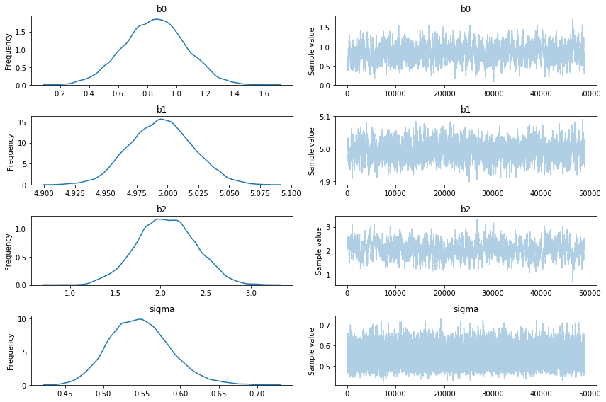

In this document I will attempt to explain how bayesian samping algorithms give you shaving cream for occrams razor for free. The main idea is to not only look at the posterior distribution of our model parameters but to also compare the likelihood distribution of these parameters to estimate the likelihood of the models themselves. I’ll do my best to keep the maths light and the conclusion needs to be taken with a grain of salt as you can achieve similar conclusions by just properly doing cross validation. Having said that, prepare to be amazed, as getting model comparison for free is no small feat.
Free Shaving Cream
Usually when you want to train a model, as a bayesian, you’ll immediately write down the following;
\[ p(\theta | D) \propto p(D| \theta)p(\theta) = \Pi_i p(d_i | \theta) p(\theta)\]
This makes sense when you’re looking at parameters in a single model. But how would you go about comparing different models? Well, we could just chug that model choice \(M\) as an uncertain variable in next to \(\theta\) as a thing we want to apply inference to. Let’s rewrite \(\theta\) into \(\theta_M\) to keep the formulation clean. Every model has a different set of parameters after all.
\[ p(\theta_m , m| D) \propto p(D| \theta_m, m)p(\theta, m) = \Pi_i p(d_i | \theta_m, m) p(\theta_m, m)\]
So far so good. We still only need to focus in on \(\Pi_i p(d_i | \theta_m, m) p(\theta_m, m)\) so not much has changed when you think about it. We could have also declared \(M = [\theta_m, m]\) and our new equation would be strikingly similar to the one we started out with.
\[p(M| D) \propto p(D|M)p(M) = \Pi_i p(d_i | M) p(M)\]
We could put some bias against complex models into \(p(M)\) but this will not be needed as \(p(D|M)\) will also prefer simpler models. This can sound very counter intuitive. This is especially true if you come from a train/test machine learning setting and have little experience with the bayesian school of thought. There are a few observations to note when trying to realize why this makes sense.
As a bayesian we’re still looking for a distribution \(p(M| D)\). This is not a maximum likelihood estimation or the result of a gradient search; this is a distribution we want to infer. This means that we have uncertainty in our parameter space. It is well possible that we come to a model that has a parameter with a very uncertain estimate. This uncertainty will be measureable and trained.
Since we’re looking for a probability distribution of hyperparameters the model may have a split opinion. There may be two ways to explain an outcome. If this happens the model needs to allocate probability mass across multiple hyperparameters/features. This means that simpler models with simpler explanations will benefit.
A more complex model, one with more feature/degrees of freedom, risks wasting parameter likelihood mass into parts that do not contribute to a better model. This effect will only be undone if the added complexity makes the model fit the data better.
We will demonstrate this with an experiment. In order to understand the setup, consider the following;
We can estimate a single likelihood distribution of a model indirectly via MCMC sampling. You can consider a single chain of \([\theta_m]\)-sampled parameters to converge to the true posterior of \((\theta_m|D)\). Every one of these sampled parameters can be mapped to a log-likelihood. You can reduce this back into a histogram to get an impression of how much uncertainty there is in your model.
You could do this for all models that you want to consider \([l(\theta_{m_1}|D), ..., l(\theta_{m_k}|D)]\). You now have multiple distributions of likelihoods of all these models. You now have many likelihood distributions that you could sample from to estimate things like \(p(M_2 > M_1 | D)\). By repeating this for all models you can pick the model that fits the data best.
Visual Explanation
Suppose that we have our normal MCMC algorithm estimating a model with two parameters. We’d expect to have a timeseries with samples that we can summarise in a histogram.
We can take the samples of our weights from our model [red]and map it to the log likelihood [blue]. This blue series can be folded into a histogram just like the sampled parameters but it has a slightly different interpretation. This is a distribution of the likelihood of the model.
Once we have this for one model, we can also do it for another model. Suppose we have another model with three parameters;
We can make one of these blue histogram for whatever model we can come up with and it is these histograms that we’ll be able to use to compare models.
An example
Let’s pretend that we have three features, four if you include the constant, ready for a linear regression. We don’t know for sure if we need to add all four featuers so we will consider four alternative models.
\[\begin{align} H_0 & \to y \sim \beta_0 + N(0, \sigma_0) \\\ H_1 & \to y \sim \beta_0 + \beta_1 x_1 + N(0, \sigma_1) \\\ H_2 & \to y \sim \beta_0 + \beta_1 x_1 + \beta_2 x_2 + N(0, \sigma_2) \\\ H_3 & \to y \sim \beta_0 + \beta_1 x_1 + \beta_2 x_2 + \beta_3 x_3 + N(0, \sigma_3) \end{align}\]
Let’s simulate our data in such a way that one of these features should not be included in the model (ie. $_3 = 0 $). The goal is to demonstrate that our model picking technique is robust enough to understand that it should not pick such a model.
Let’s make some simulated data that will prove our point.
n = 100
b0, b1, b2, b3 = 1, 5, 2, 0
x1 = np.linspace(1, 10, n)
x2 = np.sin(x1/4)
x3 = np.cos(x1/4+1)
y = b0 + b1 * x1 + b2 * x2 + np.random.normal(0, 0.5, n)
models = {} With the data defined, let’s create some of the models via PyMC3 and lets save all results in an intermediate dictionary. We will use a helper function that takes a trace, casts it to a dataframe and adds the associated loglikelihood to it.
def calc_loglik_df(model, trace):
df = pm.trace_to_dataframe(trace)
df['loglik'] = [model.logp(trace.point(i)) for i in range(len(trace))]
return dfNext we’ll define a few models in pymc3.
with pm.Model() as h0:
est_b0 = pm.Normal('b0', mu=0, sd=4)
sigma = pm.HalfNormal('sigma', sd=4)
y_var = pm.Normal('y', mu=est_b0, sd=sigma, observed=y)
h0_trace = pm.sample(10000, model=h0, step=pm.Metropolis(), njobs = 1)
models['h0'] = {'model': h0, 'trace': h0_trace,
'df': calc_loglik_df(h0, h0_trace[1000:])}with pm.Model() as h1:
est_b0 = pm.Normal('b0', mu=0, sd=4)
est_b1 = pm.Normal('b1', mu=0, sd=4)
sigma = pm.HalfNormal('sigma', sd=4)
y = pm.Normal('y', mu=est_b0 + est_b1*x1, sd=sigma, observed=y)
h1_trace = pm.sample(50000, model=h1, step=pm.Metropolis(), njobs = 1)
models['h1'] = {'model': h1, 'trace': h1_trace,
'df': calc_loglik_df(h1, h1_trace[1000:])}
pm.traceplot(h1_trace[500:]);with pm.Model() as h2:
est_b0 = pm.Normal('b0', mu=0, sd=4)
est_b1 = pm.Normal('b1', mu=0, sd=4)
est_b2 = pm.Normal('b2', mu=0, sd=4)
sigma = pm.HalfNormal('sigma', sd=4)
y = pm.Normal('y', mu=est_b0 + est_b1*x1 + est_b2*x2, sd=sigma, observed=y)
h2_trace = pm.sample(50000, model=h2, step=pm.Metropolis(), njobs = 1)
models['h2'] = {'model': h2, 'trace': h2_trace,
'df': calc_loglik_df(h2, h2_trace[1000:])}
pm.traceplot(h2_trace[1000:]);
with pm.Model() as h3:
est_b0 = pm.Normal('b0', mu=0, sd=4)
est_b1 = pm.Normal('b1', mu=0, sd=4)
est_b2 = pm.Normal('b2', mu=0, sd=4)
est_b3 = pm.Normal('b3', mu=0, sd=4)
sigma = pm.HalfNormal('sigma', sd=4)
y = pm.Normal('y', mu=est_b0 + est_b1*x1 + est_b2*x2+est_b3*x3, sd=sigma, observed=y)
h3_trace = pm.sample(100000, model=h3, step=pm.Metropolis(), njobs = 1)
models['h3'] = {'model': h3, 'trace': h3_trace,
'df': calc_loglik_df(h3, h3_trace[1000:])}
pm.traceplot(h3_trace[2000:]);Quick Observation
When looking at the traces we should already be able to smell that certain models models make more sense than others. The h0 model has a lot of uncertainty of the estimated parameters and the h3 model has a parameter that is equal to its prior. Although this gives us a hint that these models are poor choices, we can apply an even more fancy trick to quantify the model performance.
Likelihoods Ahoy
Let’s again apply a helper function.
def plot_loglik_df(name):
df = models[name]['df']
likelihoods = df[df['loglik'] > np.percentile(df['loglik'], 1)]['loglik']
plt.hist(likelihoods, bins = 50)
plt.title("likelihood distribution of {}".format(name));Let’s plot the likelihood distribution of all the models.
imgs <- c("bayesian-shaving-cream_files/razor-loglik-0.png",
"bayesian-shaving-cream_files/razor-loglik-1.png",
"bayesian-shaving-cream_files/razor-loglik-2.png",
"bayesian-shaving-cream_files/razor-loglik-3.png")
knitr::include_graphics(imgs)

These likelihoods can be interpreted as how likely it is that our model fits the data we’ve seen. These are log likelihoods, which is why the x-axis contains negative numbers. We can compare models by sampling from their respective likelihood distributions.
You can also notice that the 3rd model does not seem to fit the data as well as the 2nd model. But we can also estimate \(p(M_3 > M_2)\) by sampling these distributions.
You could make a simple sampler that estimates how likely it is that one model has a better likelihood score.
def compare(mod1, mod2, n = 1000):
arr1 = np.array(models[mod1]['df']['loglik'])
arr2 = np.array(models[mod2]['df']['loglik'])
return np.sum(arr1 > arr2)/len(arr1)
# calculate prob (h2>h3)
compare('h2', 'h3', 10000) # 0.90169999999999995Extra Benefit
Note that our method of measuring likelihood is dependant on the amount of data. If we have more data then it will be more strict, if we have less data it will be less prone to suggest one model is better than the other one.
Consider the same likelihoods when \(n=10\).
imgs <- c("bayesian-shaving-cream_files/razor-loglik-n10-0.png",
"bayesian-shaving-cream_files/razor-loglik-n10-1.png",
"bayesian-shaving-cream_files/razor-loglik-n10-2.png",
"bayesian-shaving-cream_files/razor-loglik-n10-3.png")
knitr::include_graphics(imgs)
Or the same likelihoods when \(n=500\).
imgs <- c("bayesian-shaving-cream_files/razor-loglik-n500-0.png",
"bayesian-shaving-cream_files/razor-loglik-n500-1.png",
"bayesian-shaving-cream_files/razor-loglik-n500-2.png",
"bayesian-shaving-cream_files/razor-loglik-n500-3.png")
knitr::include_graphics(imgs)
You cannot compare the likelihoods of different models that saw different data, but you can still compare models that saw the same data. If we have more data then it log likelihood automatically gets smaller. What is interesting to see is that when we have very little data we suddenly have a situation where we may prefer \(M_1\) instead of \(M_2\). We can measure this preference and come to the conclusion that it is not a strong preference though. In my the above run of \(n=10\) I estimated that \(p(M_1 > M_2) \approx 0.59\) which isn’t a very strong preference. When \(n=500\) the preference is much more pronounced but not much different from the \(n=100\) sitaution.
Try it out for yourself if you want to get convinced.
Conclusion
The goal of this blogpost is to point to an intuition of how the bayesian occrams razor works. My hope is that this document is an inspiring example that explores some lovely things from bayesian school of thought but I would recommend against doing this in production. If I am thinking practically you should first consider that;
- We’re using sampling as a method of inferring \(p(M_k | D)\) which is numerically cumbersome. You could consider apporixmate inference methods, but these have potential downsides caused by their assumptions.
- We don’t have a clear method of saying when we’ve sampled enough datapoints for all of our models. Peeking at the likelihood histogram seems to be the state of the art.
- You may be able to obtain a very similar conclusion with a frequentist T-test. I’ve found that this heuristic works well enough in most cases and it is much cheaper. This will only work on linear models though.
- You could still use train/test/k-fold validation with a proper hyperparameter search on this system and you should also be able to pick the appropriate model. This may also take a lot of time but it requires less math and is much more straightforward to explain to an engineer.
I hope we’ll get much better at fast inference of a general \(p(M_k | D)\) but we’re not there yet.